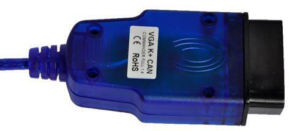
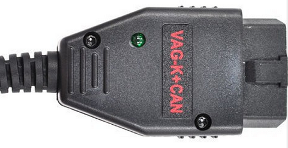
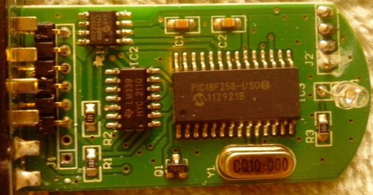
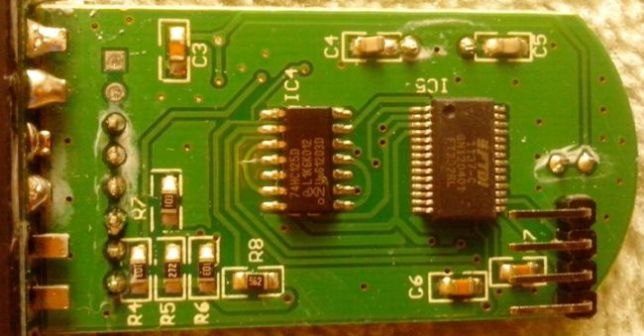
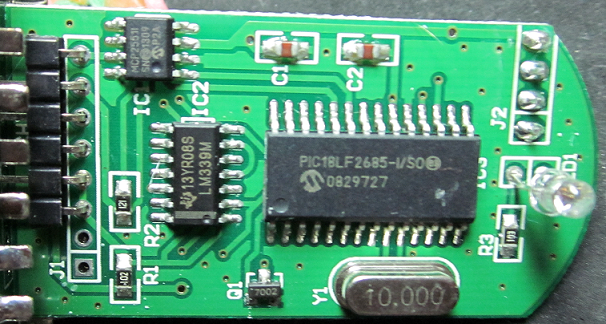
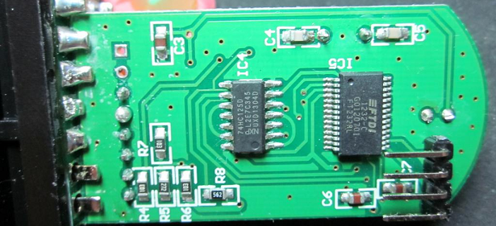
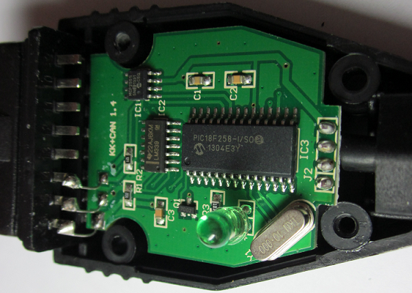
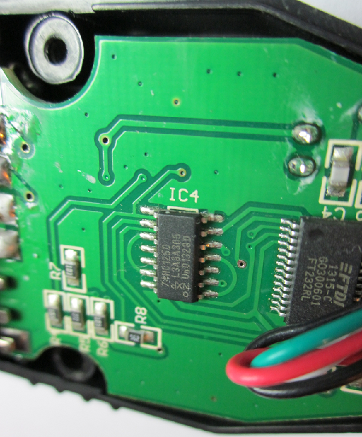
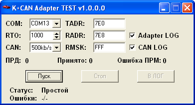
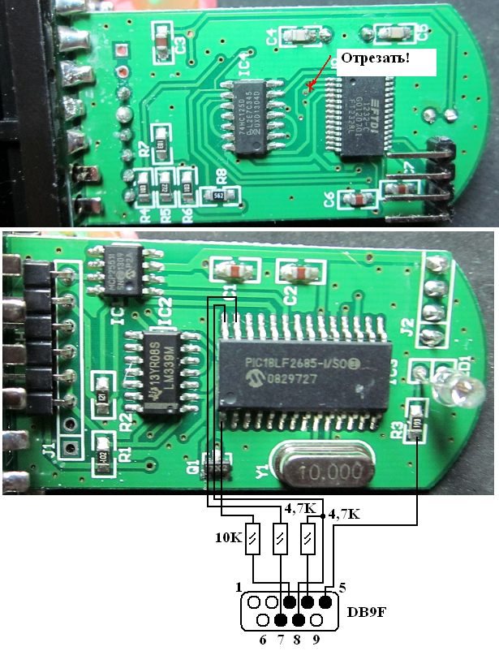

VAG K+CAN Commander 1.4, также как и ELM327 представляет собой один из простейших адаптеров с микроконтроллером на
борту. Важное отличие от ELM327 в данном адаптере в том, что работа с KL-линиями осуществляется напрямую, помимо микроконтроллера, аналогично
простому K-Line адаптеру. Следовательно адаптер на железном уровне поддерживает не только стандартные протоколы ISO-9141 и ISO-14230
как ELM327, но и любые другие протоколы, работающие на KL-линиях. ДРАЙВЕРА к адаптеру.


Микроконтроллер данного адаптера позволяет работать с протоколами на основе CAN-шины (контакты 6 и 14 на раземе стандарта J1962). В спецификации
адаптера указывается, что адаптер работает с протоколами CAN TP2.0, CAN TP1.6. В реальности команды адаптера расчитаны только прием и передачу
8-байтных CAN-посылок, без реализации протоколов верхнего уровня - таких как CAN TP2.0, CAN TP1.6, использующихся в автомобилях концерна VAG.
Таким образом сами протоколы CAN TP2.0 и CAN TP1.6 реализованы не в адаптере, а в программном обеспечении, идущим с данным адаптером в комплекте.
Такая реализация позволяет использовать данный адаптер совместно с программным обеспечением, реализующим любой другой протокол высокого уровня на
основе шины CAN, в частности ISO-15765, использующийся в автомобилях Toyota, Nissan и т.д.
Переключение режима работы "напрямую" для KL-линий и через микроконтроллер для линий CAN осуществляется сигналом COM-порта RTS.
Схемотехника адаптера следующая:






Основные узлы - микросхемы FT232RL (отличный преобразователь USB-COM); микроконтроллер PIC18F258-I/SO (PIC18LF2685-I/SO) + драйвер CAN MCP2551I (реализация CAN-протокола);
микросхема LM339 (выходные каскады для K и L линий); микросхема 74HC125D + транзистор 2N7002 (для реализации переключения режимов KL/CAN).
Применение кварца на 10MHz говорит о повышеном быстродействии по сравнению с ELM327 (где используется кварц 4MHz).
Для обмена информацией с компьютером в режиме работы адаптера через МК (с CAN-протоколами) используется скорость 833333 бит/сек. Обращаю внимание, что
это не скорость CAN-потока, а скорость обмена между адаптером и компьютером. Как уже упоминалось выше, режимы работы адаптера переключаются сигналом COM-порта RTS.
При RTS=OFF адаптер работает как обычный K-LINE адаптер. При RTS=ON включается в работу МК. Сигнал COM-порта DTR осуществляет сброс микроконтроллера (DTR=ON переводит МК в режим сброса).
Запросы от компьютера к адаптеру и ответы адаптера компьютеру в HEX-виде можно записать в общем виде следующим образом:
NN DL [DATA BYTES]
где NN (1 байт) - номер команды, DL (1 байт) - длина оставшейся части сообщения в байтах и [DATA BYTES] - байты данных.
Если адаптер поддерживает команду, то на запрос с данной командой должен придти ответ с одноименным номером команды.
Команды (в HEX-виде), поддерживаемые адаптером, следующие:
1. Установка скорости CAN-потока 500кбит/сек (устарело)
Запрос:50 00
Ответ:50 00
Примечание: Данная команда похоже устарела, так как используется только в программном обеспечении VAG K+CAN Commander 1.4, но самим
адаптером не поддерживается. В новых версиях программ VAG K+CAN Commander в данном случае используется команда C0 00. Похоже, что китайцы
хоть и пишут на адаптере, что он для версии 1.4, на самом деле этот же адаптер будет работать и с более высокими версиями VAG K+CAN Commander.
Также обращаю внимание, что после сброса МК скорость 500кбит/сек устанавливается по умолчанию (то есть без посылки каких-либо команд).
2. Установка скорости CAN-потока 500кбит/сек
Запрос:C0 00
Ответ:C0 00
3. Установка скорости CAN-потока 100кбит/сек
Запрос:51 00
Ответ:51 00
4. Чтение CAN-адресов, пакеты которых принимаются адаптером (2+4 адреса приема и 2 маски)
Запрос:52 00
Ответ:52 20 [ADR0_0] [ADR0_1] [ADR1_0] [ADR1_1] [ADR1_2] [ADR1_3] [MSK0] [MSK1]
Пример:52 20 FF 1F FF FF FF 1F FF FF FF 1F FF FF FF 1F FF FF FF 1F FF FF FF 1F FF FF FF 1F FF FF FF 1F FF FF
5. Установка CAN-адресов, пакеты которых будут приниматся адаптером (2+4 адреса приема и 2 маски)
Запрос:53 20 [ADR0_0] [ADR0_1] [ADR1_0] [ADR1_1] [ADR1_2] [ADR1_3] [MSK0] [MSK1]
Пример:53 20 FC 00 00 00 FF 1F FF FF FF 1F FF FF FF 1F FF FF FF 1F FF FF FF 1F FF FF FF 1C 00 00 FF 1F FF FF
Ответ:53 00
Маска MSK0 накладывается на адреса ADR0_0 и ADR0_1. На остальные адреса накладывается маска MSK1.
6. Вывод статусов CAN
Запрос:54 00
Ответ:54 02 TXB0CON COMSTAT
Пример:54 02 00 00
Подробнее о байтах TXB0CON и COMSTAT можно почитать в описании МК PIC18F258
7. Установка скорости CAN-потока
Запрос:55 03 BRGCON1 BRGCON2 BRGCON3
Пример:55 03 03 FA 07 - Установка скорости 250кбит/сек
Ответ:55 00
Подробнее о байтах BRGCON1, BRGCON2, BRGCON3 можно почитать в описании МК PIC18F258.
Упрощенно, скорость задается следующим образом: BRGCON2=0xFA, BRGCON3=0x07, BRGCON1=(1000000/Speed)-1.
8. Установка скорости CAN-потока 100кбит/сек
Запрос:56 01 XX, где при XX=04 скорость не меняется, а при XX<>04 - меняется на 100кб/сек
Ответ:56 00
9. Передача CAN-пакета
Запрос:60 DL [TADR] [DATA BYTES]
(пример 60 0C FC 00 00 00 03 A2 06 01 00 00 00 00)
Ответ:60 00
где DL - байт количества следующих за ним данных; TADR - CAN-адрес пакета на передачу; DATA BYTES -
байты данных CAN-пакета (от 0 до 8 байт).
10. Прием CAN-пакета
Ответ:70 DL [RADR] [DATA BYTES]
(пример 70 0C FD 00 AE 88 07 E2 06 01 22 30 40 10)
где DL - байт количества следующих за ним данных; RADR - CAN-адрес приемного пакета; DATA BYTES -
байты данных CAN-пакета (от 0 до 8 байт).
Каждый адрес или маска приема задается 4-хбайтной переменной [B0 B1 B2 B3].
Адрес закодирован в байтах B0, B1, B2, B3 следующим образом:
| CAN ID=11bit |
| - | B0 | B1 | B2 | B3 |
| CAN Addres: | [0 0 0 0 0 0 0 0] | [0 0 0 0 0 0 0 0] | [0 0 0 0 0 A10 A9 A8] | [A7 A6 A5 A4 A3 A2 A1 A0] |
| Adapter: | [A10 A9 A8 A7 A6 A5 A4 A3] | [RTR 0 0 A2 A1 A0 0 0] | [0 0 0 0 0 0 0 0] | [0 0 0 0 0 0 0 0] |
| CAN ID=29bit |
| - | B0 | B1 | B2 | B3 |
| CAN Addres: | [0 0 0 A28 A27 A26 A25 A24] | [A23 A22 A21 A20 A19 A18 A17 A16] | [A15 A14 A13 A12 A11 A10 A9 A8] | [A7 A6 A5 A4 A3 A2 A1 A0] |
| Adapter: | [A28 A27 A26 A25 A24 A23 A22 A21] | [RTR 1 0 A20 A19 A18 A17 A16] | [A15 A14 A13 A12 A11 A10 A9 A8] | [A7 A6 A5 A4 A3 A2 A1 A0] |
Бит 7 байта B1 - признак RTR (удаленный запрос). При передаче пакета если установлен данный бит данные [DATA BYTES] не передаются. Аналогично, при приеме RTR
пакета [DATA BYTES] отсутствуют. Бит 6 байта B1 указывает величину CAN идентификатора. Если он равен 0, то ID=11бит, если 1 - то ID=29бит. Для маски данный бит, а также бит RTR
должен быть равен 0. Также, к сожалению, приемные пакеты не содержат бит 6 адресного байта B1. Поэтому по приемному пакету нельзя определить был ли он с ID=11 или ID=29.
Кроме этого, в случае приема пакета с 11-битным идентификатором байты B2 и B3 содержат "мусор" (см. пример приемного пакета - это AE 88).
Пример: Адресу CAN=7E0 соответствуют байты B0=FC B1=00 B2=00 B3=00.
Примечание: В отличии от ELM327, в данном адаптере прием CAN-пакетов осуществляется постоянно, а не только после отправки CAN-пакета, и принятый
пакет адаптер сразу же передает компьютеру. Данное преимущество позволяет создать на основе K+CAN эмулятор ECU автомобиля, что невозможно на адаптере ELM327.
ГДЕ КУПИТЬ
1. AliExpress
2. Ebay
ВНИМАНИЕ! По последним данным обнаруженно, что некоторые экземпляры купленных адаптеров у людей - неработоспособны, причем странным
образом - адаптер периодически вместо правильных CAN-пакетов принимает нулевые пакеты. Причина ВЫЯСНЕНА! Оказывается в данных экземплярах адаптера китайцы поставили PIC18F248 а не PIC18F258!
МК совместимые, но у первого типа МК оперативной памяти в два раза меньше, чем у второго. Прошивка же была расчитана на PIC18F258. Поэтому и такая работа адаптера. Впринципе прошивку можно поправить и
данный тип МК тоже будет работать, но китайцы похоже этим не озадачивались. Неправильный тип МК был обнаружен в синих адаптерах. В черных адаптерах пока такого не замечалось.
Для проверки работоспособности адаптера необходимо его разобрать и посмотреть тип МК или использовать программу "K+CAN Adapter TEST" (ссылки ниже):

Первоначально необходимо установить драйвера адаптера, выяснить на какой ком-порт прописался адаптер,
выставить данный ком-порт в настройке программы. Далее подключить адаптер к автомобилю и нажать в программе кнопку "Пуск". В программе (см. рис.) присутствуют 3 счетчика -
"ПРД" (количество переданных пакетов), "Принято" (количество правильно принятых пакетов) и "Ошибка ПРМ" (число бракованных принятых пакетов).
В случае работоспособного адаптера, после нажатия кнопки "Пуск" должны увеличиваться только первые два счетчика! Если же увеличивается счетчик
"Ошибка ПРМ" - то ваш адаптер неработоспособен (требуйте возврата денег). И еще - проверить можно на автомобиле любой марки, у которого есть CAN-шина.
ОЖИВЛЕНИЕ НЕРАБОТОСПОСОБНОГО VAG K+CAN Commander 1.4
Если все же к вам пришел адаптер с МК PIC18F248 - еще не время его выбрасывать. Если у вас или у ваших знакомых есть навыки
работы с паяльником, то адаптер с данным МК можно заставить работать.
Для данного действия понадобятся: стационарный компьютер с железным COM-портом; два резистора 4,7кОм; резистор 10кОм; разъем DB9F (мама) для подключения к COM-порту;
некоторое количество провода.
1. Разбираем адаптер, на задней стороны платы обрезаем дорожку. Убеждаемся в отсутствии контакта между выв. 1 МК PIC и выв. 2 FTDI:

2. После этого собираем схему, согласно рисунка.
3. Для прошивки используется ТОЛЬКО СТАЦИОНАРНЫЙ КОМПЬЮТЕР со ВСТРОЕННЫМ COM-портом на материнской плате!
4. Используем программу WinPic800 (во вложении).
5. После установки программы выбираем серию PIC 18F и тип МК - PIC18F248.
6. Далее, в установках программы выбираем Настройки->Адаптер. Тип адаптера - JDM Programmer, а также устанавливаем номер ком-порта, к которому подключен наш шнурок для прошивки и сохраняем настройки.
7. Загружаем в программу файл прошивки pic18f248.hex (во вложении).
8. Подключаем USB-шнур адаптера K+CAN в компьютер, затем подключаем собранный шнурок для программирования в ком-порт на материнской плате.
9. В программе выбираем Device->Определить тип Device. В открывшемся окне программа должна найти МК PIC18F248. ТОЛЬКО ПОСЛЕ ЭТОГО МОЖНО ПРИСТУПАТЬ К СЛЕДУЮЩЕМУ ПУНКТУ – ПРОШИВКА.
10. Выбираем Device->Программировать все. Ожидаем завершения действия.
11. Выбираем Device->Проверить все. Ожидаем завершения действия.
12. Отключаем собранный шнурок для программирования от ком-порта а затем и USB-шнур адаптера K+CAN.
13. Восстанавливаем обрезанную дорожку на плате адаптера.
14. Проверяем адаптер с помощью программы "K+CAN Adapter TEST".
Ссылки: (Ссылка1,
Ссылка2,
Ссылка3).
|
|